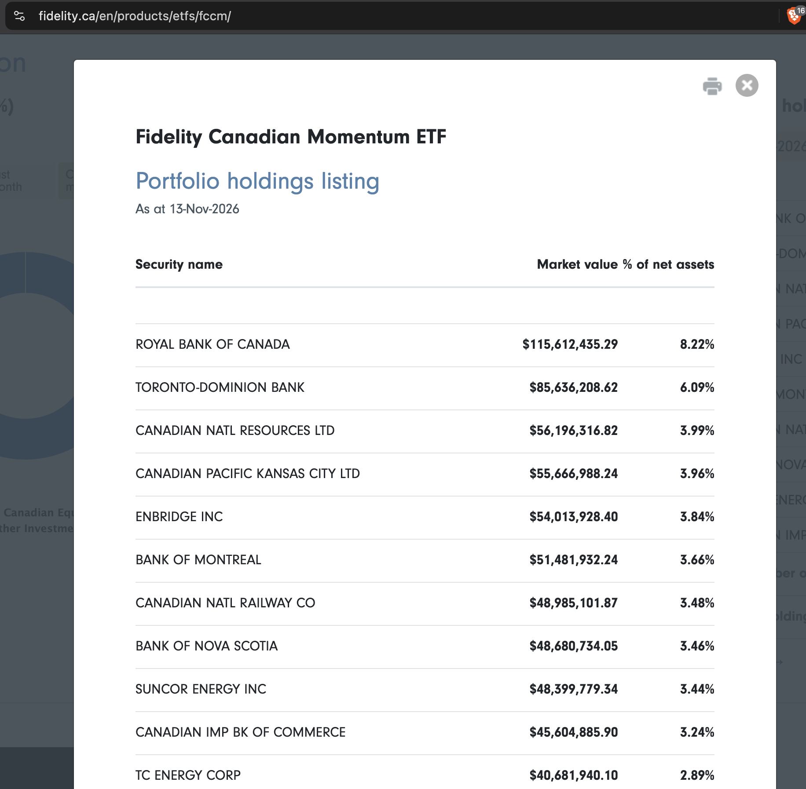

A monthly report that explains what is driving a Fidelity ETF, holding by holding
Linh Dan Ngo
Evan Lin
Luis Mario
November 2026

Investly and Fidelity help people invest in ETFs. But once the money is in, most clients stop paying attention.
What an FCCM investor sees today
1 J.D. Power, Canadian Full Service Investor Satisfaction Study · 2 Morningstar, "Mind the Gap" (10 years to Dec. 31, 2025)
Goal: keep ETF investors involved every month, without asking them to trade.
Each month the investor gets a report on their own ETF: which companies moved it, and by how much. They follow their money; they don't have to touch it.
| Feature | What the investor sees | Status |
|---|---|---|
| Performance by quarter and year | Each company's return next to its weight, and its contribution to the fund | LIVE |
| Ask the agent | A chat on the dashboard with suggested questions, answered in plain English by the n8n AI agent | LIVE |
| News and sentiment | Last month's key news per company, rated Very good / Good / Bad / Very bad, with a source link | NEXT |
Funds: FCCL, FCCV, FCCQ, FCCM (the four ETFs inside FCCA) · Updated monthly · Live web dashboard
Live demo
1 Finimize, "Customer Engagement for Financial Services", 2024 · 2 SS&C, "Digital Engagement Drives Retention" · 3 FNZ, platform engagement data
ETF Agent Report
Linh Dan Ngo · Evan Lin · Luis Mario
Live dashboard: https://chimerical-arithmetic-142fdb.netlify.app
Code: https://github.com/itsluismario/ETF-agent-report
Information only, not investment advice. Data: Fidelity Canada product data, Alpha Vantage.